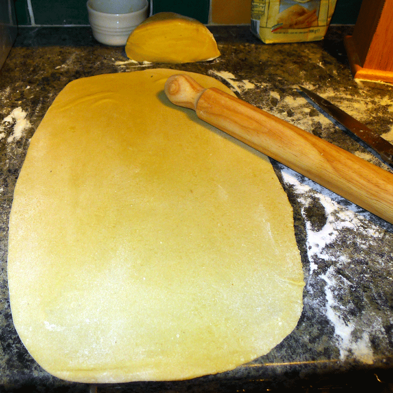

Step 2: Cut the dough into 4 equal pieces and cover with plastic wrap. Work with 1 piece at a time: Flatten the dough into a 5-by-4-inch oval, about 1/2 inch thick. Dust lightly with semolina. Roll the dough through a hand-cranked pasta machine at the widest setting. Fold the dough in thirds (like a letter), then run it through the machine at the same setting, folded edge first. Repeat the folding and rolling once more. Roll the dough through at successively narrower settings, two times per setting, until it is thin enough for you to see the outline of your hand through it. Lay the dough out on a work surface lightly dusted with semolina.
